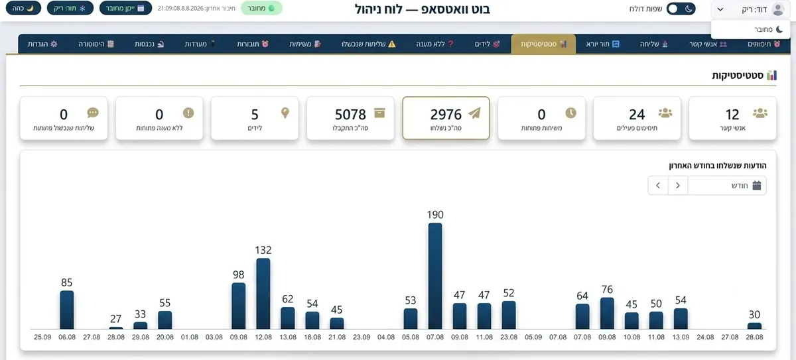

סוכן AI לעסק
סוכן AI לעסק: מה זה באמת אומר, ואיך זה עובד
לא עוד צ'אטבוט שעונה לפי תסריט. סוכן AI מותאם אישית מתחבר למערכות האמיתיות של העסק שלכם - וואטסאפ, CRM, יומן - ויודע גם לבצע פעולות, לא רק לענות.
איך זה עובד
משיחת אבחון ועד סוכן שעובד בשטח
- 1. שיחת אבחון (ללא עלות) - ממפים יחד את התהליך שחוזר על עצמו הכי הרבה אצלכם, ומחליטים מה בדיוק הסוכן צריך לדעת לעשות.
- 2. בנייה והתחברות - מחברים את הסוכן למערכות שכבר יש לכם (וואטסאפ, CRM, יומן), ומגדירים בדיוק מה הוא מורשה לעשות לבד ומתי הוא מעביר לנציג אנושי.
- 3. הרצה והתכווננות - עוקבים יחד אחרי השיחות הראשונות, בודקים מה עבד ומה לא, ומכווננים לפי מה שבאמת קורה בשטח - לא לפי ניחוש.

דוגמה מהשטח
איך זה נראה בפועל
לקוח כותב בוואטסאפ העסקי: "אפשר לקבוע תור ליום שלישי?". הסוכן בודק זמינות ביומן, מציע שעה פנויה, מאשר את התור מול הלקוח, פותח או מעדכן את כרטיס הלקוח ב-CRM, ושולח אישור עם פרטי ההגעה.
שום שלב בתהליך הזה לא דרש הקלדה ידנית מהצוות - ואם הלקוח שואל משהו שהסוכן לא בטוח בו, השיחה עוברת מיידית לנציג אנושי.
השוואה
סוכן AI מותאם אישית מול החלופות
| קריטריון | עוזר אנושי / פרילנסר | בוט מדף (תבנית כללית) | סוכן AI מותאם - A.L Systems |
|---|---|---|---|
| זמינות | שעות עבודה בלבד | 24/7 | 24/7 |
| מותאם לתהליך ולשפה של העסק שלך | תלוי בהדרכה אישית שוטפת | מוגבל לתבנית קבועה | נבנה סביב התהליך הספציפי שלכם |
| מתחבר למערכות קיימות (CRM, וואטסאפ, יומן) | ידני, דרך בן אדם | בדרך כלל לא, או מוגבל | כן, כחלק מהבנייה |
| מעבר לנציג אנושי במצב לא ברור | לא רלוונטי | לרוב אין, או מגושם | כלל מובנה, לפי מדיניות שאתם קובעים |
| עלות | שכר חודשי קבוע | מנוי חודשי קבוע | לפי היקף אמיתי, נקבע בשיחת האבחון |
לפני שבוחרים
מה לבדוק לפני שבוחרים פתרון
- 1האם הוא מתחבר למערכות שכבר יש לכם?אם הפתרון לא מתחבר ל-CRM, וואטסאפ או יומן קיימים, מישהו עדיין יצטרך להעתיק מידע ידנית.
- 2מה קורה כשהוא לא יודע לענות?בלי כלל ברור למעבר לנציג אנושי, לקוחות נתקעים מול תשובה לא רלוונטית.
- 3אפשר לראות לוג מלא של מה שקרה?בלי תיעוד של כל שיחה ופעולה, קשה לבדוק אם הסוכן באמת עושה את מה שהוא אמור.
- 4אפשר להתחיל ממשימה אחת ספציפית?פתרון שדורש להטמיע הכול בבת אחת מסוכן יותר מכפי שהוא עוזר בהתחלה.
מחשבון
כמה עולה לכם הזמן שהולך על משימות חוזרות?
הזינו את המספרים שלכם - ההערכה מחושבת רק מהנתונים שאתם מכניסים.
זו הערכה גסה שמחושבת רק מהמספרים שהזנתם, לא נתון חיצוני. בשיחת האבחון נבנה יחד הערכה מדויקת יותר לעסק שלכם.
שאלות נפוצות
שאלות שחוזרות על עצמן לגבי סוכן AI לעסק
מה ההבדל בין סוכן AI לבין צ'אטבוט רגיל?
צ'אטבוט רגיל עונה לפי תסריט קבוע מראש. סוכן AI מותאם אישית מחובר למערכות האמיתיות של העסק שלכם - וואטסאפ, CRM, יומן - ויודע גם לבצע פעולות, לא רק לענות: לקבוע תור, לעדכן כרטיס לקוח, לשלוח תזכורת.
כמה זמן לוקח להטמיע סוכן AI לעסק?
תלוי בהיקף ובמספר המערכות שהוא מתחבר אליהן. בשיחת האבחון הראשונה, שהיא ללא עלות, תקבלו הערכת זמן מדויקת לפי הצרכים שלכם.
האם סוכן AI מחליף עובד?
לא. המטרה היא להוריד מהצוות שלכם את המשימות החוזרות והצפויות, כדי שיוכלו להתפנות לעבודה שדורשת שיקול דעת אנושי.
מה קורה אם הסוכן לא יודע לענות על משהו?
הסוכן מעביר את השיחה לנציג אנושי בכל מצב שהוא לא בטוח בו, לפי כללים שאתם קובעים מראש. שום דבר לא נשאר תקוע.
אפשר להתחיל קטן ולהרחיב בהמשך?
כן, בדיוק כמו עם שאר המערכות שלנו - מתחילים מתהליך אחד ספציפי שחוזר על עצמו הכי הרבה, ומרחיבים בהדרגה לפי הצורך.
להעמיק
מדריכים נוספים על סוכן AI לעסק
איך בודקים אם סוכן AI באמת משתלם
איך למדוד אם סוכן AI מחזיר את ההשקעה — מדריך מעשי לבדיקת כדאיות לפני ואחרי הטמעה.
לקריאה ← צעדים ראשוניםאיך מתחילים עם סוכן AI בעסק קטן
איך סוכן AI מתחבר לשיחות ולנתונים שלכם, ואיך מתחילים בלי לשנות הכל ביום אחד.
לקריאה ← מדריך לבוחריםאיך בוחרים ספק לבניית מערכות AI
חמש שאלות שכדאי לשאול לפני שבוחרים מי יבנה לכם מערכת AI לעסק.
לקריאה ← אוטומציה5 תהליכים שכדאי להפוך לאוטומטיים עם AI
מענה ללקוחות, מעקב תשלומים, תזכורות ותיאום צוות — מה סוכן AI יכול לקחת על עצמו.
לקריאה ← ייעוץ ונתוניםייעוץ עסקי כבר לא מספיק בלי נתונים מהשטח
איך AI הופך את מה שקורה בשיחות עם לקוחות להחלטות מבוססות נתונים.
לקריאה ← עלותכמה עולה לעסק לא להשקיע באוטומציה?
תהליכים ידניים עולים כסף בדרכים שקשה לראות בדוח רווח והפסד.
לקריאה ←